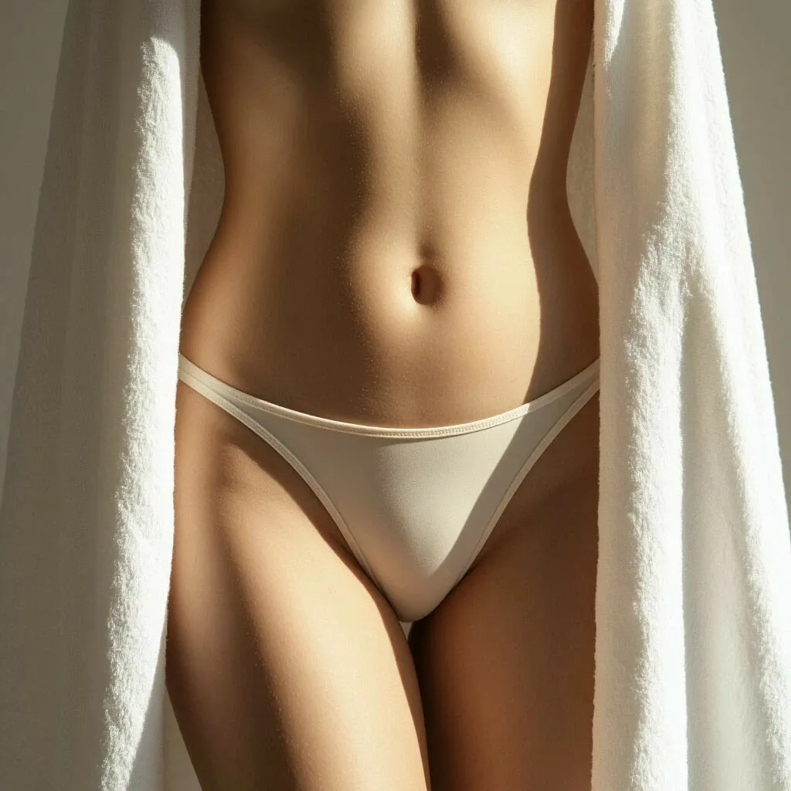

Лазерная эпиляция глубокого бикини без боли: как проходит процедура

Глубокое бикини — самая интимная и одновременно самая востребованная зона для лазерной эпиляции. Девушки выбирают её ради гигиены, комфорта в бассейне и на пляже, а также личной уверенности. И главный вопрос, который задают перед процедурой: «Это же, наверное, очень больно?» Наш ответ — нет, если делать на правильном оборудовании.
Что такое глубокое бикини и какие зоны входят
В отличие от классического бикини (только по линии трусиков), глубокое бикини включает полное удаление волос со всей интимной зоны: лобок, половые губы, межъягодичная складка. Кожа здесь тонкая и чувствительная, поэтому особенно важны технология и опыт мастера.
Почему на диодном лазере не больно
Наш EVOLUTION оснащён сапфировой насадкой, которая охлаждает кожу до -5°C. Холод подаётся непрерывно — до, во время и после вспышки. Вы чувствуете только лёгкое тепло, а не боль. Большинство клиенток спокойно переносят процедуру и даже успевают расслабиться.
Как подготовиться к процедуре
За сутки — побрить зону станком. За 2 недели — не загорать и не использовать воск. В день процедуры — душ без масел и кремов. Если вы стесняетесь — не переживайте, наши мастера проводят десятки таких процедур ежедневно, это абсолютно рабочая и комфортная обстановка.
Сколько нужно процедур и когда виден результат
Первое выпадение волос заметно через 10–14 дней. Кожа становится гладкой, без щетины и раздражения. Для полного эффекта нужно 6–10 процедур с интервалом 6–8 недель. После курса волосы либо исчезают полностью, либо становятся единичными и тонкими.
Цены и абонементы на глубокое бикини в LaserSilk
Разовый сеанс — 2 500 ₽. Курс из 6 процедур — 13 000 ₽ (экономия 4 000 ₽). Для новых клиентов — скидка 30% на первый визит. В абонементе стоимость одного сеанса снижается до 2 166 ₽.
Попробуйте и убедитесь сами
Запишитесь на процедуру в студию у м. Водный стадион. Первый сеанс со скидкой 30%. Деликатно, комфортно, без боли.
ЗаписатьсяЗвоните: 8 (991) 574-47-17
подскажем, какая эпиляция вам подходит.